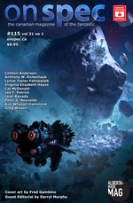

And Should I Fall Behind

First published in On Spec, Winter 2021.
For Jeff, who told me that I still have good times in front of me.
“They’re coming,” the younger warned, eyes closed as he stretched his eldritch senses to their limits.
“Oh really?” the older snapped. He shifted his black-bladed alien sword to his left hand and drew his blaster with his right. It only had a dozen charges left, and who knew how effective it would be against the half-dimensional horrors pursuing them, but its weight was comforting. Not for the first time, he wished his brother was a little less smart—just less-smart enough to not piece together the strangely-cold shards of a map made when the sun was still yellow and—
“Spoiler.” Robbie struggled to sit up. “That’s a spoiler. We don’t know how old the map is yet, do we?”
“Um…” George flipped back a few pages and nodded. “Okay, good catch. That’ll be easy to fix—it’s just a bit of pencil work. You want to keep going?” She was careful not to look at her brother as she asked.
Robbie settled back on the bed that had been his home for the last two months. He claimed he didn’t notice the drip tube in his arm any more, but George did. It, the quiet machine it was connected to, and the faint smell of sweat and antiseptic that reminded her of their mother’s final illness fifteen years before.
“‘Sokay if we take a break?” Robbie yawned. He gestured at the tablet lying in his lap like a patient old cat. “I want to try a couple more fixes to the congestion algorithm. The simulations still say traffic could get blocked up unless there’s at least two dozen satellites in the network, and with the budget cuts…”
“Sure. I’m supposed to get home soon anyway,” George lied. She slipped the pages she’d drawn that morning into her folder and stood up. “You need anything?”
Robbie shook his head, already lost in his tablet. “I’m good. Say hi to Suyin for me.”
“‘Course. She’ll come by on the weekend.” George hesitated, just as she always did when the time came to leave. They had never been a hugging family, but the one time she and Robbie had bumped fists, they had both burst out laughing at how ridiculous it felt. “You sure you’ll be okay?”
Robbie looked up from the dense tangle of graphs and code on his screen. “You mean, am I going to have another episode? No idea. But I’m sure I’ll be fine.” Then he smiled their mother’s smile, the one that meant “I love you but I’d like to get back to work now”.
George closed the door gently behind her, went downstairs, slumped into an overstuffed blue chair that had been their mother’s and closed her eyes. When her tears finished, she wiped her eyes and got to her feet. Six pages a day was a punishing pace, but this was one deadline she didn’t want to miss.
The quiet clatter of dishes in the kitchen drew her toward the rear of the small mid-century house. She knocked gently on the door frame. “Hey.”
The nurse looked up from her phone. A slim middle-aged refugee from Spain, she had come in every day since Robbie started losing hours. A pot of tea sat steeping on the table next to a tray of overcooked pasta and oxycodone. She would sit with him to make sure he ate it all, then take care of what the agency euphemistically called “close personal care”. George had spoken to her so many times now that she was too embarrassed to ask her name.
“Good morning,” the nurse said, setting her phone aside. “How are you today?”
George shrugged. “‘M all right. He’s working. Seems to be himself.”
The nurse nodded and stood. “Good. He said they’ve moved the launch date back again. It is…” She hesitated.
George’s jaw tightened. “It’s well after he’ll be gone. I know.”
She rode the streetcar east from the university annex where she and Robbie had grown up to a neighborhood of gentrified two-story homes with big front windows and small back yards where children played street hockey while parents humble-bragged about the cost of their renovations. A slice of pizza in tinfoil waited for her on a stool in front of the coat closet with a note saying “Eat this or else! - xxx Suyin”. She took it and her folder upstairs to the spare bedroom that she used as a studio, taped down a fresh page, and picked up her pencil.
They called it a palace, but no one knew what purpose the enormous serpentine structure had served, or how it had survived under the ice that had blanketed the world for aeons. That was the real reason the brothers had come: not the hope of treasure, but the chance to fill a void in the world’s memory of itself. The craving to know everything had drawn them into one perilous misadventure after another. For all that he complained, the older couldn’t imagine any other life.
Not that it looked like they had much life left to imagine. An adult flying polyp could devour the minds of an entire city in a single night—even the Mi-go feared them. Knowing that it might take the freshly-hatched larvae pursuing them entire hours to suck their souls dry was surprisingly little comfort. “You just had to see what was behind that bloody door, didn’t you?” the older brother panted.
The younger smiled a smile that meant, “I’ll make this up to you later but right now we have work to do.” The chip of soul jade in his forehead was glowing. Faint shadows cast by nothing eyes could see began writhing on either side of him.
“George?” She straightened at the sound of her name and rolled her head to work the kinks out of her neck.
“Upstairs,” she called. Suddenly aware of the hours that had passed, she pulled open her desk drawer, swept the uneaten pizza into it, and closed it again just as the door opened behind her.
Her wife crossed the room and kissed the top of her head. “How’s he doing?”
“He’s dying,” George replied. Then she sighed and turned to give her wife a hug. “Sorry, love. You knew that.”
“It’s okay.” She stroked George’s hair. “Was he all there this time?”
George nodded. “Seemed to be. We went through the pages I did yesterday. It’s nice that he’s taking an interest. I just wish…” She closed her eyes and waited for the tears to come again.
The next morning was cold and damp. The city hadn’t seen a real snowstorm in years, and for all the jokes people made about how global warming might not be such a bad thing after all, George missed the crunch of fresh powder under her boots.
The nurse met her at the door. “He’s not himself right now,” she said without preamble,. “You might want to give him some time before you go up.”
George dropped her coat on the chair. “I’d give him all the time in the world if I could.” She stepped around the nurse and took the stairs two at a time.
Robbie didn’t look up when George knocked on the door frame. “Hello.”
“Hi,” George said as casually as she could. When had her brother ever said “hello”?
The silence stretched. “Still trying to fix the congestion whatsit?” George asked.
Robbie shook his head without looking up from his tablet. “No. I sent the solution to the team last night. I expect it will take them some time to understand it, so I am doing some research.” He turned the tablet around. “Do you know what this is?”
George blinked at the sight of some of her own early art. “That’s a xorn. It’s from one of the original monster manuals. They had me do some concept art for the first VR game. Where did you find it?”
“And this?” Robbie asked, ignoring the question.
“Kuo-toa,” George replied cautiously. “They’re basically Deep Ones.”
Robbie nodded. “The people of the water. Interesting. You drew it as well?”
George shrugged. “It was a paycheck.” When Robbie said nothing further, she took a deck of cards from her pocket and riffled them. “You up for some poker?”
At that, Robbie finally looked up. “Poker. Yes, thank you, I would enjoy that.” He set his tablet aside. “The usual stakes?”
George hesitated. “I don’t think you’re going to be able to wash dishes any time soon.”
Robbie’s smile didn’t reach his eyes. “I won’t have to.”
They played a dozen hands. Robbie folded five times and won the other seven. “I’m going to quit while I’m behind,” George grouched after her brother laid down a final pair of queens.
Robbie nodded. “Thank you for the game.”
“Sure.” George looked at the rail-thin figure lying in the bed, certain now that whoever she was talking to wasn’t the brother she had grown up with. “‘Sokay if I check in later?”
“Of course,” Robbie said, reaching for her tablet once again. “It’s always a pleasure to see you.”
The nurse was waiting at the bottom of the stairs. “I’m sorry,” she said quietly.
George thrust her hands into her pockets. “Thanks. Have you ever seen—I mean, have any of your other patients ever…?”
The nurse shook her head, fingering the green-gray stone that hung on a silver chain around her neck. She dropped her hand when she noticed George looking at it. “I’m sure it will pass.”
“Thanks,” George said again. Her mother had kept a stone carved with the same odd five-pointed design on her desk. She had started doodling it once at the dinner table, but her mother had stopped her. “I’m going to run a few errands—I’ll be back later.”
She shrugged her arms into her coat on her way out the door, pulled out her phone, and opened her contact list. It had been fifteen years, and the man George needed to speak to had been old even then, but he still answered on the second ring. “That coffee shop still there?” he asked half way through George’s third sentence.
“Yeah, but—“
“Half an hour.” He hung up without waiting for an answer.
Doctor Biczo had leathered with age. What little hair he’d had when George first met him was gone—even his eyebrows had finally given up. But his eyes were still a piercing blue, and his grip was as strong as an eagle’s. “Sorry about Robbie,” he said without preamble, seating himself across from George and setting the paper cup of dime store coffee he’d brought with him on the rickety table.
“Thanks.” George sipped her own mug of mostly foam, suddenly unsure where to start. “He’s doing okay, I guess. He didn’t want to do chemo, not after what Mom went through, so we’re just trying to keep him comfortable and stop him from losing weight too fast.”
Doctor Biczo waited patiently for her to go on, just as he had when he interviewed George and Robbie during their mother’s illness on behalf of whatever unspecified government agency he doctored for. “He’s not himself sometimes,” George blurted. “Like Mom was, so I was wondering if you ever found out—I mean, is this some kind of genetic thing?”
The old man shook his head. “It’s not genetic. At least, not that we know. How often does it happen?”
“Almost every day,” George confessed reluctantly. Another patient silence stretched and broke. “I know you must be retired by now, but I was wondering if you could…” She shrugged again, unsure what she was really asking for beyond a grownup to tell her that everything was going to be all right.
Doctor Biczo snorted. “Turns out retired isn’t really a thing these days. Sure, let’s go talk to him.” He drained his coffee in one long swallow and stood.
“Uh, now?” George hastily gulped a too-hot mouthful of foam and stood as well, wishing as she had known she would that she had left well enough alone.
The doctor’s ten-year-old BMW smelled faintly of leather and tobacco, even though the seats were covered in cordura and Biczo didn’t seem like the sort to indulge in controlled substances. They drove four blocks in silence and parked outside the house. George waited while the doctor tested the car’s doors to make sure they were really locked, then followed him inside.
The nurse came down the stairs to meet them as they came through the door. “I wasn’t expecting you back so soon,” she said, obviously flustered.
George gestured at Doctor Biczo. “Just wanted a second opinion. Is he awake?”
“Yes, but I don’t think he—” The nurse stopped abruptly as Doctor Biczo finished hanging his coat and turned around. She moved aside to clear the stairs, her eyes downcast. “I’m sure he’ll be happy to see you.”
George had a moment of deja vu as they trudged up the stairs. She and Doctor Biczo had climbed those same stairs together fifteen years ago each time he came to examine George’s mother. “He’s a specialist,” the oncologist had explained uncomfortably the first time. I thought you were the specialist, George had thought, but she had kept the thought to herself. Not Robbie—he had demanded to know why they were shut out of their mother’s room during Biczo’s visits, then slammed his bedroom door and thrown himself into yet another programming project when none was forthcoming.
Robbie was awake. More importantly, he was himself—the non-expression from earlier had been replaced by something weary but human. “You mean, other than dying?” he asked rhetorically in answer to Doctor Biczo’s first question. “All right, I guess. ‘Course, the drugs help.” He tapped the drip line in his arm with a fingertip.
“And your episodes?” Doctor Biczo asked.
Robbie settled back against his cushions. “Straight into it, eh?”
“I’m just trying to help,” the doctor said gently.
“Like you helped Mom?” He glanced accusingly at George. “You terrified her.”
Doctor Biczo took off his glasses and rubbed the bridge of his nose. “I’m sorry for that. But honestly, it wasn’t me she was frightened of. It was her dreams.” He replaced his glasses and sighed. “You’ve been having them too, haven’t you?”
The moment balanced, then Robbie let out his breath and nodded jerkily. “Yeah.”
Doctor Biczo nodded in return. “Tell me about them.”
Robbie shrugged. “I’m in the desert, but the rocks look sculpted—all pillars and arches and shapes like half-melted statues. It’s like the stuff George draws, or an old album cover.”
“A desert?” Doctor Biczo frowned. “That’s new.”
“I know, right?” Robbie nodded at his tablet. “I’ve been doing some searches, and most people talk about giant ferns and black stone towers. And they say the sun is brighter than usual, but in my dreams it’s orange. The only thing that’s the same is the questions.”
“Most people?” “Questions?” George and Doctor Biczo asked at the same time.
Robbie answered his sister first. “Yeah. Turns out Mom wasn’t the only one this happened to. There have been a bunch of cases. There was a professor named Peaslee just before the First World War—Mom had some of his son’s books in her collection. And there was another prof back in the fifties, and a couple of other people.” He locked eyes with Doctor Biczo. “All of them belonged to that same weird cult Mom joined.”
George’s heart sank. “Come on, not this again. Mom didn’t join anything. That was just part of her research. She was never a believer.”
Robbie’s hands tightened into fists. “Mom was never a believer because she didn’t have to believe. She knew. Didn’t she?” he shot at Doctor Biczo.
The old man shook his head. “I don’t know what your mother knew or didn’t know. I wish I did. Now, what about these questions?”
Robbie snorted. “That’s the funny bit. When this started, they were all about the networking code I’m writing. That’s why it didn’t bother me. I just figured—sometimes I really get into what I’m working on.”
“When it started,” Doctor Biczo prompted.
“Yeah. But now all they want to know about is George’s stories.” He forced a laugh. “You’re famous in my dreams, sis.”
Doctor Biczo raised an eyebrow at George. She raised her hands. “Don’t look at me. They’re his dreams.”
“You said ‘they’ want to know,” the doctor continued, as if George’s comment was completely reasonable. “Who are ‘they’?”
“I don’t know,” Robbie confessed. “I never see them. I see other people, though. It’s like something out of a Star Wars movie. Most of them are human, but some are, you know, alien humans, and some are just…aliens.” He looked into a distance that wasn’t there in the room. “I think we’re all going somewhere. A caravan, maybe, or a pilgrimage.”
Doctor Biczo nodded. “Thank you, Robbie. And thank you for getting in touch,” he added, turning to George and putting out his hand.
“Sure,” George said, shaking it. “Is this—do you think this is whatever Mom had?”
Doctor Biczo shook his head. “I don’t know what this is,” he confessed. He glanced at a visibly-tired Robbie. “I’ll give you two a moment.”
George closed the door quietly after the doctor left. “I’m sorry,” she said. “I should have asked you before calling him.”
“Fucking right you should have,” Robbie mumbled, his eyes closed. “But I prob’ly would have if you didn’t.”
“Really?”
Robbie yawned without opening his eyes. “Yeah. You think this is this some kind of subconscious thing? Me remembering Mom being like this, and wanting to go wherever she went?”
“I thought you didn’t believe in the subconscious,” George replied, blinking at the sudden wet warmth in her eyes, but her brother was already asleep.
Downstairs a few moments later, George shook Doctor Biczo’s hand once again. “Should I be worried?”
The doctor shook his head. “I don’t think so. It’s probably just a side effect of his medication.”
“Sure,” George said, not believing a word. She thought about checking on the nurse, who had retreated to the kitchen, but grabbed her coat and followed the doctor out the door instead.
“Stop!” The brothers whirled around at the rasp of—
“Wait!” The brothers whirled around as a desert-roughened voice rasped behind them. The old woman that stood—
A bent figure emerged from a shadowed doorway in the rock, a staff in its—
—from a shadowed doorway in the wall. The dust mask that obscured its face—
—from a shadowed doorway behind them and drew aside the keffiyeh that obscured her face. Her eyes gleamed almost as brightly as the chip of soul jade in her forehead. “Mother!?” the brothers gasped in unison.
George tore the page from her pad, crumpled it up, and tossed it over her shoulder. The cat had long since lost interest in playing with the shrapnel from her writer’s block. She reached for the coffee she had finished an hour ago and rolled her head to get the knots in her neck to click.
Paper rustled on the floor behind her. “Going well?” Suyin’s hand came down gently on her shoulder.
She put her own hand on top of her wife’s and leaned back against her. “I’m about to start browsing ads for website designers.”
“Ouch.” Suyin set a fresh cup of coffee on her work table and picked up the stale one. “Is Robbie okay?”
“Yeah. I mean, he’s still dying, but…” George sighed. “I did something I shouldn’t have.” She picked up a red pencil and started to doodle blunt five-pointed stars on a fresh sheet of roughing paper. There was writing as well, she remembered, something that looked like a cross between hieroglyphics and fluid flow diagrams.
After a moment, her wife squeezed her shoulder. “Stop that. Whatever it is, I’m sure he’s forgotten about it by now.”
“I doubt it.” George tore the sheet of doodles off the pad, swearing as the page tore. “Why can’t shit just work?”
“Because it’s shit,” Suyin said, just as she always did. She squeezed her shoulders a little less gently than before. “If you’re that upset, just go and see him. I’ll finish the laundry, and when you get home…”
“Mm hm?”
She put her lips to George’s ear and whispered, “We can have hot chocolate and watch some Buffy.”
For the first time in a long time, the gray winter drizzle didn’t bother her. Even the headlines scrolling endlessly in the streetcar’s windows couldn’t burst her mood. Conspiracy theories about the concurrent collapse of the world’s ice sheets, fishing stocks, and bee populations were just so much background noise these days.
But the trio of black SUVs on the street outside the house could. Her phone bleebled as she approached to warn her that she was entering an active law enforcement zone and could be subject to fines, imprisonment, or both if she didn’t turn around.
She didn’t. “What’s happened? What’s wrong?” she demanded, her heart pounding.
The impassive man blocking the front gate shook his head. “I’m sorry, ma’am, I need you to keep moving.”
“Like hell! This is my brother’s house. Is he—Doctor Biczo! Doctor Biczo, what’s going on?”
The doctor’s expression as he came down the front steps was apologetic but resolute. “I’m sorry, George.”
“What? Who—wait, what are you doing?” The front door had opened again. Two men guided a stretcher through it and down the stairs. Robbie lay on it, unconscious under a silvery space blanket with his drip tube still in his arm.
“Jesus suffering fuck!” George exploded. “What the hell are you doing? You can’t move him!”
“I’m sorry, George,” Doctor Biczo repeated. “But we need to talk to him. He’ll be fine, I promise.”
“You promise?” The rage that George had been bottling up since Robbie’s diagnosis boiled over. Her clumsy punch caught the doctor on the jaw. “Fuck you, you don’t get to—“
A strong arm wrapped around her. Something cold and sharp pricked her neck, and darkness fell.
She was in an enormous vaulted chamber whose ceiling was lost in shadows overhead. There were colossal round windows and high arched doors, and tables on elongated legs. Vast shelves of dark wood lined the walls, holding volumes of immense size with strange hieroglyphs on their spines.
She was carried through corridors of stone, and up and down gigantic inclined planes, past trap doors sealed with metal bands that she somehow knew were never to be opened. Finally she reached a strange machine formed of vitreous tubes and metal rods. It hummed, or rather did something that would be called humming if it was actually a sound, and then the whole scene dissolved into an inchoate swirl of impossible non-Euclidean angles and slipped away.
Her next thoughts took a while to form. I’m awake, was the first, followed shortly by, I’m going to feel pretty stupid in a minute.
Her vision cleared. Her tongue was a tongue again rather than a slab of unchewed meat taking up space in her mouth. She swallowed, rubbed her eyes with a clumsy hand, and turned her head.
A hospital bed. A pillow. A light blanket the same institutional powder blue as the sheets. A plastic scoop-backed chair so featureless it looked like a drawing. A single square light panel set into the ceiling. A small window with a view of a brown brick wall. Nothing she could use as a weapon, nothing she could hurt herself with. For one fleeting moment she wondered if it was some kind of VR game, but the faint smell of antiseptic and despair washed away the last effects of whatever drug she had been given. She fingered the bruise on her neck, worried for a moment that it might look like a hickie. How would she explain that to Suyin?
She got to her feet and padded across the cold tile floor to the window in her socks. No matter how she craned her neck, all she could see was the brick wall six feet away. The light felt like morning, not late afternoon. How long had she been here?
The door behind her opened. The man who had been outside the house came in first, his winter coat replaced by a plain black turtleneck. Robbie’s nurse followed him, then another beefy man pushing a stainless steel cart loaded with medical equipment, and finally Doctor Biczo. “I’m sorry, George,” he said. “But we need to ask you some more questions.”
She struggled, but the two men were stronger than her and had clearly had lots of practice holding people still. The nurse swabbed her arm and stuck a needle in it without once looking at her face. She shouted and swore, knowing it wouldn’t do any good, and then part of her floated free, giddy and unconcerned while the rest of her chuckled softly at their questions. What was Robbie working on? What was he really working on? When had his episodes started? What did he talk about when he wasn’t himself? Had George ever had episodes like that?
Her “no” earned her a second injection. No, she’d never had any episodes like that. No, she didn’t know why Robbie had been looking at old D&D manuals, or why he was re-reading George’s graphic novels and the illustrated adventures of Conan the Barbarian and Leigh Brackett and Jack Vance and—
“You’ve got it wrong,” George said unsteadily when whatever they’d given her wore off. Her tongue felt like a slab of meat again. “He only ever played fantasy games ‘cause I wanted to. He was never really into it.”
“He certainly seems to be into it now,” Doctor Biczo mused. “Or someone does.”
George tried to straighten up. “Where is he? What have you done with him?”
“He’s all right.” Doctor Biczo nodded at the nurse, who wouldn’t meet George’s eyes. “We haven’t hurt him, I promise.”
“Fuck you,” George said, weary and hopeless and angry. “And fuck your promises. He doesn’t have time for this shit.”
Doctor Biczo snorted. “Have you looked at the world recently? None of us have much time any more,” he added under his breath.
George’s hands bunched into fists as a thought struck her. “Did you do this to Mom? When she was sick?”
The look on Doctor Biczo’s face gave her his answer. “You shitbag,” George said coldly. “Why?”
As if in answer, the door behind Doctor Biczo swung open. “Because they are afraid,” said Robbie. He raised his hand and gulped words that were clearly never meant to be uttered by a merely human voice. With no more warning than that, Doctor Biczo, the nurse, and the two guards toppled over.
George got to her feet unsteadily, her mouth working. “Come on,” Robbie said, slipping his shoulder under George’s arm.
“What the hell…?” George managed to ask.
“Later,” Robbie said firmly. “Let’s get out of here first.”
The “hospital” turned out to be an old shopping mall that had been converted to office space but never filled. They stepped over two other unconscious bodies on their way out.
“So you can do magic now?” George asked.
Robbie shrugged. “It’s complicated.”
George straightened up. “Who the fuck are you?” she demanded. “And what have you done with my brother?”
This time Robbie’s smile reached all the way to his eyes. “Those are good questions. Perhaps the answers can wait until after our departure?”
They drove away in a compact robocar with an on-call tag hanging from the mirror. George sat in front while Robbie curled up on the back seat, his lungs laboring with the effort of their escape. Once they were out of the parking lot, George twisted around in her seat to look at her brother. “Someone’s going to come looking for us, you know.”
“Probably,” Robbie agreed. “This interference is inconvenient.”
“Inconvenient? Robbie, you could have died! I mean, look at you, you’re exhausted and you haven’t had your meds and—“
“I’m not actually Robbie right now,” her brother said, gentle and matter-of-fact like the doctor had been when Robbie got his diagnosis. “And if you don’t mind, I have some questions for you.”
He filled in the details as the car navigated through early morning traffic. Deep in the past, something that looked like it belonged in one of George’s teenage sketchbooks had swapped minds with Robbie. “So you’re some kind of Yith?” George asked disbelievingly, remembering the word from one of her mother’s books. “And Robbie’s back in the Cretaceous somewhere?”
“Approximately,” her brother’s voice said calmly.
“So how do I know he’s okay?” George demanded.
Robbie closed his eyes. His lips worked briefly as if he was talking to someone unseen. “You nicknamed your wife’s breasts Arwen and Galadriel,” he said.
“Okay,” George said weakly. “But—this is—we have to tell everyone!”
“It won’t do any good,” not-Robbie replied gently. “This is just one age of many, and a short one at that. Your kind is going to end it soon.”
“We’re going to end it?” George asked incredulously.
Robbie nodded out the window at the unseasonally warm winter. “You have the dubious distinction of being the only race to destroy itself. And if that was all there was to it, we might never have bothered with you. Except somehow you come back. Ages and ages from now, after the Ck’chk’ck and the Sareeav, after the earth has been frozen for an aeon, you come back.”
George threw up his hands. “And how do we do that?”
“That is unknown,” Robbie said. “After the Sareeav there is an age of machines. They have reason and purpose, but not minds, so we cannot know them. They warm the earth and fill it with all manner of creatures, including your kind. By the time the people of the water wake from their long frozen sleep, the machines will have returned to the depths of space.”
“What’s that got to do with you? I mean, with Robbie?” George asked helplessly. Then it hit her. “They’re his machines, aren’t they? The satellites he’s been working on.”
Robbie shook his head. “No. Your technology is still too primitive. The machines’ progenitors are created four centuries from now. But the network begins here, and so do many of the things the machines create. Flying ships and zombies and ray guns—all of them are taken from the stories of this era, and an improbable number taken from your work. We do not understand how that is possble.”
The distaste in Robbie’s voice when he said “ray guns” almost made George giggle. Whoever or whatever this was in her brother’s body clearly didn’t like mysteries. “So if it’s my work you’re interested in, not his, why…?” She gestured helplessly.
Robbie cleared his throat. “We cannot project ourselves into just anyone. The vessel has to have a certain, um, mental capacity.”
George looked at him. “You’re saying I’m not smart enough.”
“We tried,” Robbie admitted. “And you were able to sustain the exchange for several minutes. That’s really quite good.”
Without warning, his slumped sideways. For a heart-stopping moment George thought he was dead, but then his eyes fluttered and opened. He sat up once again, his face drawn with pain. “Hey.”
“Welcome back,” George said. “How’re you feeling?”
“I’ve been better,” Robbie admitted weakly. “You should take me home.”
“Home? No no no.” George shook her head. “That’s the first place they’ll look for you.”
“Let them look,” the dying man said wearily. “There’s not much more they can do.”
The only trace of official presence at the house was a few neighbors’ faces peeking out from behind hastily-drawn curtains. George called Suyin, apologized for her overnight disappearance, promised to explain everything, and told her she loved her. Then it was just her and Robbie, alone with each other as they had been in one way or another since their mother died.
Robbie spoke first. “It’s funny. The Yith are so much smarter than we are, but they just can’t get their heads around computers.”
He opened his tablet and dragged a document onto the screen. “When Biczo comes back, show him this. Tell him there’s more in a dead drop account. If he ever bothers you and Suyin…”
“You can tell him yourself,” George said, already knowing it wasn’t going to be true.
“George…” Her brother shook her head. “It’s okay. I got to see things I never dreamed of. And you’ll be fine.”
“Stop saying that,” George whispered, wiping her eyes angrily. “How can I be fine? Didn’t you hear yourself? We’re going to destroy everything. How can that be fine?”
Robbie’s breath whistled slightly as he breathed. “I met someone when I was…you know. He’s an Australian physicist named Kingston-Brown. Lives in Antarctica about five hundred years from now. They’re sending self-replicating machines out to the asteroids to make solar shields to try to cool the planet back down. They’re closer to the end than we are, but they still make jokes and fall in love. If they can do it, so can you.”
“But what’s the point?” George demanded.
Robbie settled back on his pillow. “Funny thing. Even the Yith don’t know the answer to that one.” He smiled. “Tell you the truth, I kinda like the idea of them not knowing things.”
Suyin found them there an hour later. Robbie’s labored breathing was finally silent. George sat beside him, a sketch of two children playing poker at a kitchen table taking shape in her notebook.
Two months later, after the first set of satellites was safely in orbit, a message arrived from Robbie’s dead drop account. Sorry I couldn’t tell you myself, it said, But I was afraid they might be listening. The changes I made to the congestion algorithms freed up some memory. There wasn’t time to test any new code, so I convinced them to put some literature in, like the record on Voyager. I fiddled the inspection records so that everyone would think someone else had checked it. The files appended to the message had the titles of 20th Century classics, but when George opened them, she laughed for the first time since her brother’s death. Trolls and mermaids, four-armed green Martians, evil empires, heroes with blasters who nevertheless fought with swords: they were all there, ready for their billion-year slumber.
George stared at the blank page in front of her. The next set of satellites was going up in a month. There was no way she could get any more stories on board, so what was the point of writing them? But then she remembered what her brother told her as they played one last hand of poker to the sound of Bowie and Yes. “The point is that it’s not over yet,” Robbie had said. “The point is whatever you do now.”
George picked up her pen.
He set the last stone on the double cairn and wiped the sweat from his brow. His younger brother had held off the polyps while the old woman somehow make them real enough for his blaster to kill, but the effort had drained them both. With her last breath, the old woman had whispered something in his brother’s ear. The chips of soul jade in their foreheads had gleamed in unison, and whatever it was that made them more than just atoms had gone wherever such things go.
The older brother (who would always think of himself that way) shouldered his pack. The supplies in the old woman’s cave had been packed for travel, as if she had been expecting him. The box of gemstones with them would buy him an army—or an airship capable of crossing the sulfurous sea. Maybe there would be answers there. Maybe there would just be more stories.
He looked up at the orange sun, dying but not yet dead, and set off to find out what would happen next.